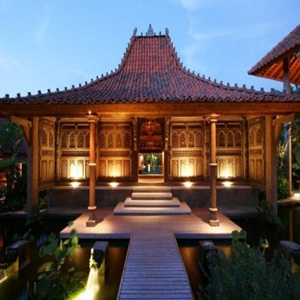

Rumah Joglo Rumah Adat Jawa Tengah
Kategori: Rumah Adat

Rumah joglo merupakan rumah adat Jawa Tengah yang paling tersohor. Konon, hanya orang kaya dan terpandang saja yang mampu membangun joglo. Dengan demikian, secara tidak langsung rumah adat ini menunjukkan status sosial dan ekonomi pemiliknya.
Joglo terdiri atas berbagai model antara lain Joglo Pangrawit, Jompongan, Sinom, dan Hageng. Rumah ini bukan sekadar rumah hunian biasa. Tak berbeda dari rumah adat Aceh, setiap bagiannya mempunyai nilai-nilai filosofi yang tinggi.
Cerminan nilai luhur terlihat dari bagian-bagian rumah beserta keterangan berikut:
- Pendapa, yaitu bagian untuk menjamu tamu.
- Pringgitan, ruang tengah yang digunakan untuk menerima tamu yang memiliki hubungan dekat dengan pemilik rumah.
- Omah ndalem atau omah njero yaitu ruang tempat keluarga berkumpul dan bercengkrama.
- Senthong atau kamar tidur yang terbagi atas senthong tengen (kamar kanan), kiwa (kiri), dan tengah.
- Padepokan, sebagai tempat beribadah, menenangkan diri, tempat perlindungan, dan kegiatan atau ritual yang sakral.
- Saka guru yaitu empat pilar utama sebagai penyangga rumah mewakili empat arah mata angin yaitu timur, selatan, utara, dan barat. Di dalam saka guru terdapat tumpang sari yang disusun dengan pola terbalik.
- Pintu rumah berjumlah tiga. Tata letak pintu berada di tengah dan kedua sisi kanan dan kiri melambangkan kupu-kupu yang sedang berkembang di dalam keluarga.
https://notepam.com/